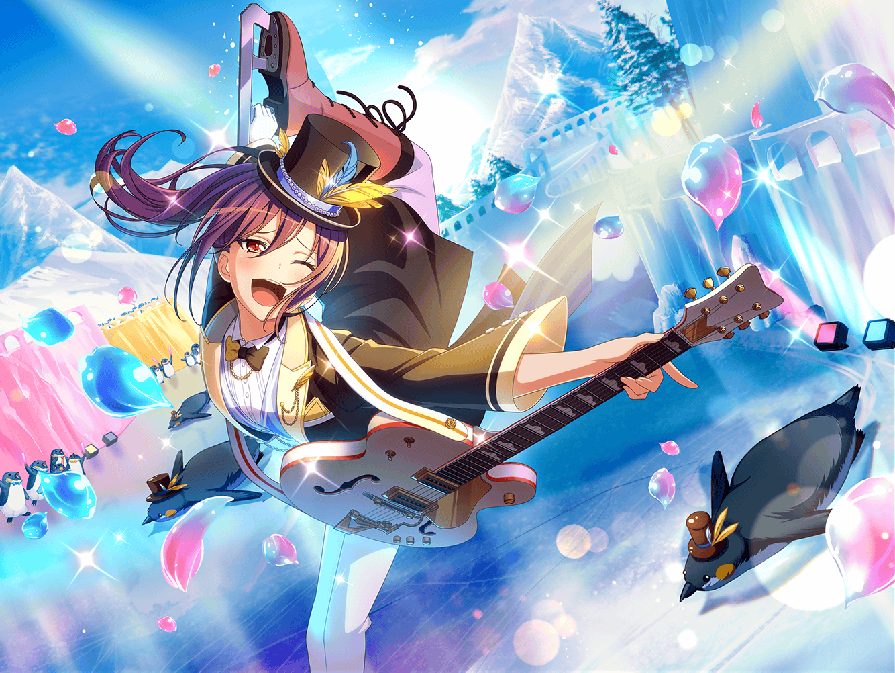

CiRCLE 外観
薫
やあ、{{userName}}さん。
こんなところで会うなんて、奇遇だね
薫
……ん？ ここは仕事場の目の前？
薫
ふふ、実に鋭い指摘だ。
運命とは偶然ではなく必然……つまり、そういうことさ
薫
……ああ、私は見ての通り、お茶をしていたところだよ
薫
今日はバンドの練習日なんだが、早く着き過ぎてしまってね
薫
いや、早く着きすぎた……
というより１時間間違えていたというほうが正しいだろうか
薫
とはいえ、こうして練習前にお茶ができたのだから、
それもまたいいだろう
薫
ん？ もしかして、今は休憩時間なのかな？
薫
それなら、お茶に付き合ってもらえないかい？
薫
ひとりでお茶をするのにも、味気なさを感じていたところでね。
みんなが来るまでの間、話し相手になってもらえると嬉しいよ
薫
なに、君を退屈にさせる話をするつもりはないよ
薫
先日、ハロハピのみんなと不思議な出来事に遭遇してね。
きっと君にも楽しんでもらえる話になるはずさ
薫
ふふ、どんな話なのか気になってしまったようだね
薫
それなら、その椅子に腰を下ろしてくれ
薫
迷子のペンギンとハロハピの冒険物語をお聞かせしよう
薫
……と、つまりそういうわけさ
薫
事実は小説よりも奇なり、とはよく言ったものだね
薫
まさか、街中であんな出会いがあるとは夢にも思わなかったよ
薫
とはいえ、素敵な出会いだった
薫
何かを成し遂げるためにみんなが力を合わせる……
それはとても儚く、素晴らしいことだからね
薫
そのきっかけをくれたペンギンには感謝しているよ
薫
特にあの時の花音の姿には胸を打たれてしまったかな
薫
普段は控えめな子猫ちゃんの花音が見せた、
強い意思を帯びた表情はとても素敵だったよ
薫
きっとペンギンを助けたいという真剣な気持ちが、
花音にいつも以上の勇気を与えてくれたのだろうね
薫
そんな彼女を見ていたら、改めて思ったことがあるんだ
薫
真剣に向き合うことは、とても大切なことだとね
薫
ああ、誤解しないでくれ。
普段、真剣に物事に向き合っていないわけじゃない
薫
私はいつだって真剣に物事に向き合っているつもりだよ。
特に役者として役を演じている時はね
薫
演じるということは、自分ではない別の誰かになることだ
薫
生半可な気持ちで挑んでも、役をものにすることはできない
薫
その役に身を捧げる覚悟で、真摯に向き合わなくてはね
薫
だからこそ、花音を見ていて、
真剣に向き合う大切さを改めて実感したんだよ
薫
……ん？ 私の演技をすごいと言ってくれるのかい？
薫
ありがとう。そう言ってもらえて、とても光栄だよ
薫
これからも役に恥じない芝居を追求していくつもりさ。
ハロハピに出会って、ますます演技に磨きがかかってきたからね
薫
演じることの楽しさを知ったその先で、
ハロハピという素晴らしいバンドに出会えた……
薫
これはひとりの役者として、とても幸運なことだよ
薫
バンドで得たものを演技に、舞台で得たものをハロハピに……
そうしていければ、こんなに素敵なことはないだろうね
薫
……ああ、そうだ。
今度の舞台の招待状を送らせてもらっても構わないかい？
薫
私の芝居を褒めてくれたことへのささやかなお礼だよ
薫
それに、君がどんな感想を持つのか、とても興味があるんだ
薫
公演を心待ちにしていてもらえると、とても嬉しいよ
薫
……おや、あれは美咲達かな？
ふふ、ハロハピの子猫ちゃん達のご到着のようだ
薫
それじゃあ、これで失礼するよ
薫
私の話に付き合ってくれてありがとう。
おかげで、実りのある時間を過ごせたよ